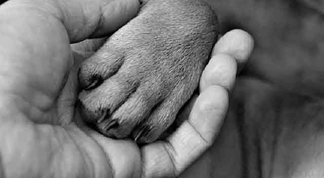
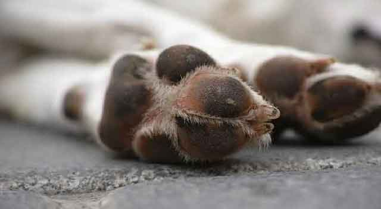
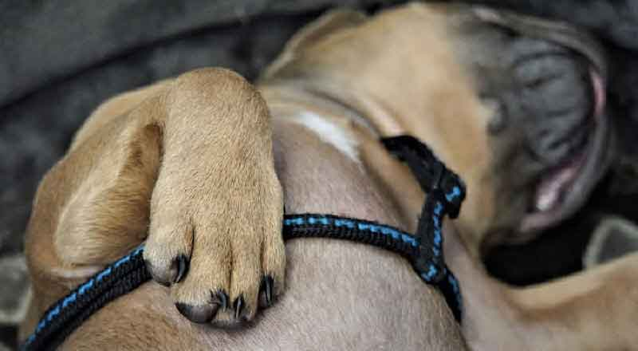
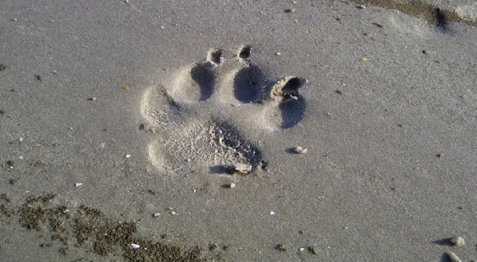

강아지 발톱 자주 잘라야 할까요?
강아지뿐만 아니라 반려동물을 키우는 분들이라면, 반려동물의 발톱은 언제 잘라줘야 하는지 궁금하실 텐데요. 강아지의 발톱은 혈관이 이어져 있어서 너무 길게 자라지 않도록 관리를 해주셔야 합니다. 하지만 몸부림 치는 강아지를 데리고 발톱을 자르기란 쉽지 않죠. 그래서 하루, 이틀 미루다 보면 어느새 길게 자라난 강아지의 발톱을 보게 됩니다.
"강아지 발톱, 왜 잘라야 할까요?"
강아지 발톱을 잘라야 하는 이유는 앞서 말씀드린 내용처럼 '혈관'이 이어져 있기 때문입니다. 발톱이 길어지면 그만큼 혈관도 길어지기 때문에 나중에는 긴 발톱에 혈관이 이어져 나오는 상황이 발생하겠죠.
사람 손톱이나 발톱이 길면 생활하기 불편한 것처럼 강아지도 발톱이 길면 생활하기 무척 불편합니다. 특히, 실내에서 마룻바닥이나 대리석 바닥을 걸을 때는 미끄럼의 위험이 있고, 미끄러지면서 골절이 되기도 합니다. 조금만 자주 신경 써준다면 발생하지 않을 일들이 일어날 수 있으니 강아지 건강을 위해서라도 발톱 관리는 주기적으로 이뤄져야 합니다.
반면, 실외 생활이 잦은 강아지라면 비교적 발톱 손질이 덜 필요할 수 있습니다. 실내견과는 달리 외부 활동을 통해서 자연스럽게 발톱이 갈리기 때문이죠! 뛰고 걸으면서 갈려진 발톱은 자연스럽게 다듬어집니다.
"강아지 발톱 자르는 방법! 알려주세요!"
강아지 발톱은 사람 손톱이나 발톱과는 달리 자라는 만큼 혈관도 동시에 연장이 됩니다. 그래서 사람 손톱, 발톱을 생각하고 바짝, 또는 살에 가깝게 잘라서는 안 됩니다. 되도록 반투명한 발톱 사이로 미세하게 보이는 혈관을 피해서 45도 각도로 잘라 주는 것이 좋습니다.
다만, 견종에 따라 발톱 색상이 다를 수가 있습니다. 흰색 발톱을 가졌다면, 반투명한 흰색 발톱 사이로 혈관이 보이지만 검은색 발톱은 혈관 자체가 보이지 않습니다. 따라서 더욱더 신중하고 조심스럽게 발톱을 잘라줄 필요가 있습니다.
"항상 완벽할 순 없죠! 피가 난다면 지혈제!
조심스럽게 잘라준다고 생각했지만, 혈관이 잘 보이지 않을 때에는 혈관까지 자르는 일이 자주 발생합니다. 사람이라면 감각적으로 어느 정도 자르면 아프겠다고 생각할 수 있지만, 말 못하는 강아지에겐 어려운 일이겠죠. 혈관까지 자르게 된다면 아마 강아지는 아픈 앓는 소리를 낼 것입니다. 피가 나지 않는다면 다행이지만, 혹여 피가 난다면 지혈제로 피를 멎게 하고 놀란 강아지를 진정시킨 후 발톱을 자르거나 추후 다시 도전하는 것으로 강아지 마음을 안정시킵니다.
사람과 마찬가지로 강아지도 발톱 색상으로 건강 상태를 진단해 볼 수 있습니다. 평소와 다른 색상 또는 검푸르게 변한 발톱을 보게 됐다면, 될 수 있으면 빠르게 동물병원으로 내원하는 게 좋습니다. 염증 발생 우려가 있고 심각한 경우 암으로 진단받을 수 있습니다.[출처] 강아지 발톱 자주 잘라야 할까요?
강아지 발톱! 사람 손톱 자르는 듯 간단한 일이지만, 주의가 필요한 만큼 자주 관리해 주시길 바랍니다!
[출처] 강아지 발톱 자주 잘라야 할까요? ｜ 작성자 반려사랑